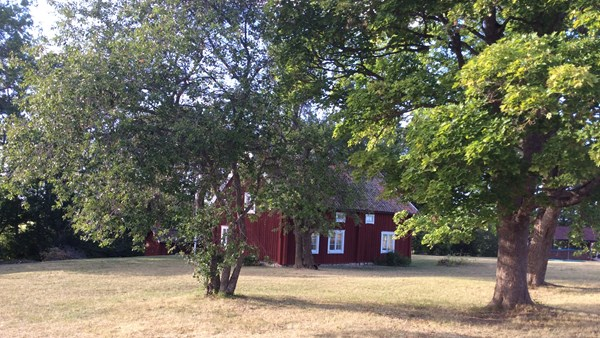

Kvarngården är en hembygsgård i Knivst, inte långt ifrån där jag bor. Sen när jag var liten och gick i skolan, brukade vi dra hit på utflykter ibland. Men saken är den att det inte är just det som gör att jag gillar stället. Det bästa med den här platsen är att det finns en liten å med en brygga där man kan sitta ostört hur länge som helst. När jag gick i gymnasiet var detta en mysig liten plats för mig.
Förutom Programmering 1 har jag inte särskilt mycket erfarenhet. Jag var dock involverad i en praktikperiod på ungefär två månader hos ett företag. Under denna tid fokuserade jag huvudsakligen på arbete med HTML. Min uppgift bestod främst av att åtgärda mindre fel på deras hemsida, t.ex. ifall en sökruta eller liknande var alldeles för lång.